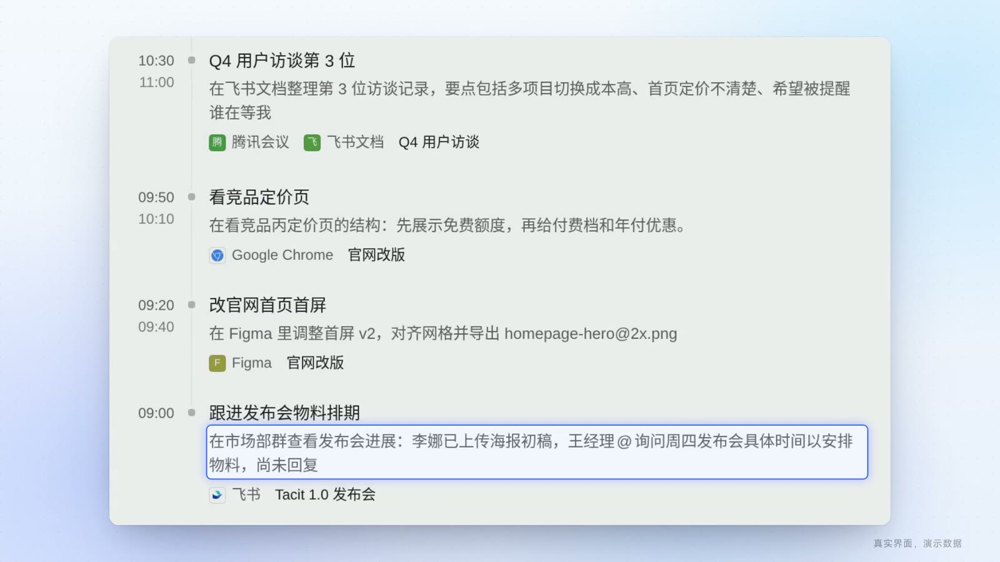
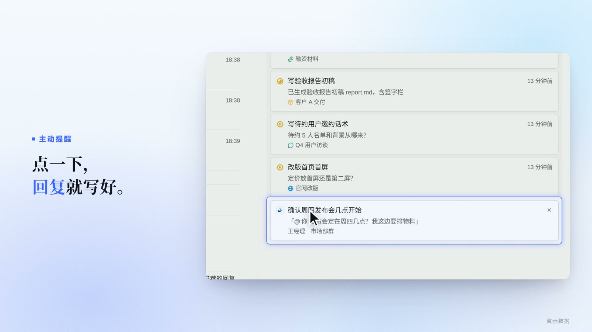

A really good agent product doesn't need the agent abstraction
Tacit 1.0 is open source today. This is why I built it this way.
Most agent products start by introducing you to the agents. Give it a name, pick an avatar, set up its skills, add it to a group.
I see it differently.
I think what people want is the job done. Who the agent is, how many there are and how they divide the work are details the system should handle. They shouldn't be put in front of a person. So in Tacit you never see the agent layer: no roster, no roles, no plugins or skills to configure. You see projects, tasks, and a board called Waiting on you.
What other products put in front of you
Start with the products of the past year and the abstraction each one chose.
| Product | The abstraction you face | What you manage |
|---|---|---|
| Raft, Multica, Claude Code Agent Teams | Agents are teammates, with names, identities, memory and their own inboxes | Names, skills, who is stuck |
| Manus Cue | Every agent has its own email, phone number and wallet | A team to run |
| Claude Code, Kimi Code, Codex | One main agent plus disposable subagents | Writing the task out in full, waiting for the summary |
| Manus Wide Research, Kimi Agent Swarm | One orchestrator plus hundreds of workers | One question at a time |
| Genspark, Cursor 2.0 | Several models each doing the same job | Picking the model, picking the result |
| OpenClaw, OpenHuman, ChatGPT Pulse | One assistant that is always there | One conversation that keeps growing |
| dsh-superagent | Tickets and one panel, with sessions hidden completely | Only the panel |
Raft says it most directly: agents are first-class citizens, teammates. I see why that direction appeals. It is intuitive. But the more an agent resembles a person, the more you resemble a manager. Who is doing what, who is stuck and how far a job has got all mean digging through the matching conversation.
The last row goes the other way, and it is the one I agree with most: a session should be an implementation detail, and people should face only the work. It serves a team and one repository. I want the same thing for one person and the many projects they are carrying.
I didn't begin here. I also gave every assistant a name, an avatar and a persona. After a few months I found that the people using it cared about none of that. They asked two things: how far along is that job, and is it my turn yet.
With the agent layer removed
You only state the goal. I said one sentence: we launch Tacit 1.0 next Thursday, make an invitation, then write a media Q&A, a slogan and a press release, and ask me before starting whether the slogan is in Chinese or English. It opened two tasks that started together. It didn't open the slogan one and came back to ask first. I didn't choose who would do the work, and I still don't know "who" did.

You don't explain the background. Most of the time spent with agents today goes into feeding background: copying a chat thread, pasting a file, explaining where you left off yesterday. Tacit records what happens on your screen and in Feishu, organises it every 10 minutes into the few things you were doing, files them by project, and keeps every entry traceable to the raw record.



When it's your turn, it comes to you. Once things run in parallel, the hard part is keeping track. Waiting on you lists only what needs you: decisions, acceptances, failures, and messages someone is waiting for you to answer. The cards have no buttons. Click one and a sentence is drafted in the composer for you to edit and send.


When it's done, you only accept. What reaches you is the finished thing. Web pages open in place and documents are laid out. A job is done only after you accept it. The assistant can't say "finished" for you.

Nothing to say twice. When you raise the same problem after delivery three times, it drafts new working instructions overnight and asks in the morning whether to use them.
Technically, the whole job is organising context
Removing the agent layer doesn't make what is underneath simpler. There is one thing to get right: organising context.
I have read the source of eight open-source multi-agent projects and taken apart six or seven products, and the finding is consistent: none of them shares a context window. A subagent receives a description written by its parent and hands back its last message. Taken apart, multi-agent is three questions: how one context is cut, how much of it the next window gets, and how the result is collected. That is a fork.
So the effort goes into these places.
Sessions are cut by job, not by person. The same job continues the same session, and a different job starts a new one. How many sessions there are, which model runs and where are the system's business. The task page you face holds only what a person understands: the background, your own words, what counts as done, the outputs, the progress.

Outbound, each job gets exactly enough. Everyone else's experience is that context is passed as well as the task description is written, and paraphrase is where it gets lost. So the server passes your own words to the executor verbatim. The assistant adds one line of explanation, and anything it adds is marked separately and doesn't count as your request. Large material sits in the project's shared files and only the path is passed.
On the way back, results land on the job. Deliveries, questions and failures are recorded on the task. State follows the job, not the session. That is why the execution layer can be swapped out whole: today it is a session in DeepSeek Harness, and you can switch a task to Claude Code or Codex. What you see stays the same.
Only what is useful goes into the window. Memory and the timeline aren't poured in whole. The model takes only the part that concerns this job, and every item carries its source. A model gets confused when context grows too long, so "more" has to come with organising.
Definite judgments go to code. Whose words count as authorisation, whether a quote really is in the original message, whether the same thing was raised twice: code checks these and the model only interprets. Any request that appears on screen or in a message is treated as material, never as an instruction. Only your own words count as a decision or an acceptance.
The person using it needs to know none of these details. That is what I mean by not needing the agent abstraction: the complexity is still there, organised around real tasks and hidden behind the work.
What stays is context
Agents will keep getting stronger and cheaper. What stays and accumulates is context: what you said, what you decided, what you accepted.

If you think using AI means running an AI team, Tacit will surprise you a little. There is no team to run here.
Say one sentence. It gets it.
Tacit is an open-source plugin for DeepSeek Harness. The code is at github.com/DKKD13/tacit-dsh. The source-level teardown of how products pass context is in another post. The images come from the demo film: the interface is real, the data is demo data, and the one marked as an illustration is drawn.